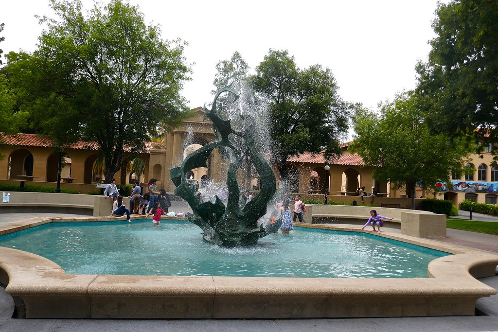

Let's go to Palo Alto!
The Stanford Campus

The weather in Palo Alto, California is perfect walking weather. The Stanford campus is large, containing about 16,900 people. Owning a bike is very convenient, the campus in additon, has huge roads allowing a lot of room for walkers, bikers and skaters. There's lots of sightseeing over there, containing places like...
- Cactus Garden
- The Water Fountain
- Cantor Arts Center
- And more!
THE CACTUS GARDEN
The Cactus Garden is the home to lizards, birds and other animals. There are many different pathways in the garden, all ending up in a different part of campus but all surrounded by cacti.
THE WATER FOUNTAIN
The water fountain is perfect in the hot California weather for when you need to cool down for a bit. It's on the smaller side compared to the University of Washington's water fountain but it's convenient for when you need dip your feet in the water, especially after walking for so long!